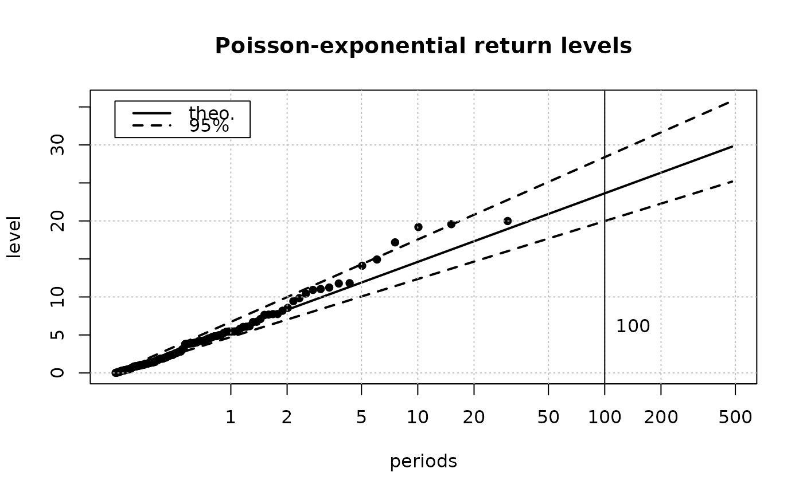

Return level plot
RLplot.RdReturn level plot for "Renouvellement" data.
Usage
RLplot(data,
x = NULL,
duration = 1,
lambda,
conf.pct = 95,
mono = TRUE,
mark.rl = 100,
mark.labels = mark.rl,
mark.col = NULL,
main = NULL,
ylim = NULL,
...)Arguments
- data
-
A data.frame object with a column named
quant. - x
-
Optional vector of observed levels.
- duration
-
The (effective) duration corresponding to
xif this argument is used. - lambda
-
Rate, with unit inverse of that used for
duration, e.g. in inverse years whendurationis in years. - conf.pct
-
Vector (character or integer) giving confidence levels. See Details below.
- mono
-
If
TRUEcolours are replaced by black. - mark.rl
-
Return levels to be marked on the plot.
- mark.labels
-
Labels shown at positions in
mark.rl. - mark.col
-
Colours for marked levels.
- main
-
Main title for the return level plot (defaults to empty title).
- ylim
-
Limits for the y axis (defaults to values computed from the data).
- ...
-
Further args to be passed to
plot. Should be removed in future versions.
Details
Percents should match column names in the data.frame as follows. The
upper and lower limits are expected to be U.95 and L.95
respectively. For a 70% confidence percentage, columns should
have names "U.70" and "L.70".
The plot is comparable to the return level described in Coles'book and
related packages, but the return level is here in log-scale while
Coles uses a loglog-scale. A line corresponds here to a one parameter
exponential distribution, while Coles'plot corresponds to Gumbel,
however the two plots differ only for small return periods. This plot
is identical to an expplot but with x and y scales changed:
only axis tick-marks differ. The convexity of the scatter plot is
therefore opposed in the two plots.
Note
Confidence limits correspond to two-sided symmetrical
intervals. This means that the (random) confidence interval may be
under or above the true unknown value with the same
probabilities. E.g. the probability that the unknown quantile falls
above U.95 is 2.5%. The two bounds are yet generally
not symmetrical with respect to quant; such a behaviour follows
from the use of "delta" method for approximate intervals.
It is possible to add graphical material (points, lines) to this plot
using log(returnlev) and quantile coordinates. See
Examples section.
Examples
## Typical probability vector
prob <- c(0.0001,
seq(from = 0.01, to = 0.09, by = 0.01),
seq(from = 0.10, to = 0.80, by = 0.10),
seq(from = 0.85, to = 0.99, by = 0.01),
0.995, 0.996, 0.997, 0.998, 0.999, 0.9995)
## Model parameters rate = #evts by year, over nyear
lambda <- 4
nyear <- 30
theta.x <- 4
## draw points
n.x <- rpois(1, lambda = lambda*nyear)
x <- rexp(n.x, rate = 1/theta.x)
## ML estimation (exponential)
lambda.hat <- n.x / nyear
theta.x.hat <- mean(x)
## Compute bounds (here exact)
alpha <- 0.05
quant <- qexp(p = prob, rate = 1/theta.x.hat)
theta.L <- 2*n.x*theta.x.hat / qchisq(1 - alpha/2, df = 2*n.x)
theta.U <- 2*n.x*theta.x.hat / qchisq(alpha/2, df = 2*n.x)
L.95 <- qexp(p = prob, rate = 1/theta.L)
U.95 <- qexp(p = prob, rate = 1/theta.U)
## store in data.frame object
data <- data.frame(prob = prob, quant = quant, L.95 = L.95, U.95 = U.95)
RLplot(data = data, x = x, lambda = lambda.hat,
duration = nyear,
main = "Poisson-exponential return levels")

RLplot(data = data, x = x, lambda = lambda.hat, duration = nyear,
mark.rl = 10, mark.labels = "10 ans", mono = FALSE, mark.col = "SeaGreen",
main = "Poisson-exponential return levels")
points(x = log(50), y = 25, pch = 18, cex = 1.4, col = "purple")
text(x = log(50), y = 25, col ="purple", pos = 4, labels = "special event")